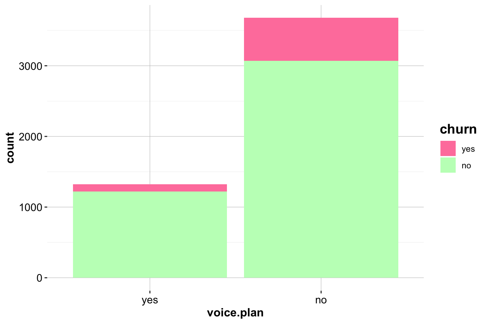

5 Statistical Inference and Hypothesis Testing
Statistical inference bridges the gap between what we observe in a sample and what we want to understand about the population. It allows us to assess whether the patterns we observed during EDA reflect true relationships in the broader population—or whether they’re just the result of chance. In this chapter, we’ll focus on the practical side of statistical inference: how to ask the right questions, apply the appropriate techniques, and use results to guide meaningful decisions.
The goals of statistical inference can be summarized into three fundamental tasks:
-
Estimating unknown population characteristics, such as averages or proportions.
-
Quantifying Uncertainty to measure how confident we can be in our results.
- Testing Hypotheses to evaluate whether observed patterns are statistically meaningful or simply due to random variation.
These tasks lie at the heart of data analysis, providing the foundation for robust conclusions and data-driven decision-making. In this chapter, we’ll explore these three pillars—estimation, uncertainty, and hypothesis testing—using intuitive explanations and practical examples.
But statistical inference isn’t just about learning techniques—it’s also about critical thinking. By the end of this chapter, you’ll learn two essential skills:
-
How to detect when others are misusing statistics, so you can identify misleading claims.
- How to avoid statistical missteps yourself, or, if you’re feeling mischievous, how to “lie” with statistics effectively.
For those intrigued by the art of spotting statistical trickery, consider reading Darrell Huff’s classic book, How to Lie with Statistics. Although written with humor and journalistic insight, it offers timeless lessons in statistical skepticism—a valuable skill in an age of data overload.
Let’s dive in and learn how to make inferences with confidence, curiosity, and just a touch of caution.
5.1 Estimation: Using Data to Make Predictions
Estimation addresses the question: What can we infer about the population based on our sample? For example, in the churn dataset, we may want to estimate:
- The average number of customer service calls among churners.
- The proportion of customers subscribed to the International Plan.
Estimation comes in two main forms:
-
Point Estimation: A single best guess for the population parameter (e.g., the sample mean or proportion).
- Interval Estimation: A range of values (confidence interval) likely to contain the true population parameter.
Let’s explore some examples:
Example 5.1 To estimate the proportion of churners in the dataset, we use the sample proportion as a point estimate for the population proportion. Here’s how to calculate it in R:
# Calculate the proportion of churners
prop.table(table(churn$churn))["yes"]
yes
0.1414The proportion of churners in the dataset is 0.14. This serves as our best single guess for the proportion of churners in the population.
Example 5.2 let’s estimate the average number of customer service calls for customers who churned. The sample mean acts as a point estimate for the population mean:
# Filter churners
churned_customers <- churn[churn$churn == "yes", ]
# Calculate the mean
mean_calls <- mean(churned_customers$customer.calls)
cat("Point Estimate: Average Customer Service Calls for Churners:", mean_calls)
Point Estimate: Average Customer Service Calls for Churners: 2.254597If the mean is 4 calls, this is our best single guess for the average number of customer service calls among all churners in the population.
Key Insight: While point estimates are informative, they don’t tell us how precise or reliable they are. For that, we turn to confidence intervals.
5.2 Quantifying Uncertainty: Confidence Intervals
Confidence intervals (CIs) provide a way to quantify uncertainty by offering a range of plausible values for a population parameter. Instead of saying, “The average number of customer service calls is 4,” a confidence interval might state, “We are 95% confident that the true average is between 3.8 and 4.2.”
A confidence interval combines:
- A point estimate (e.g., sample mean or proportion).
- A margin of error, which accounts for variability and uncertainty.
The general form of a confidence interval is:
\[ \text{Point Estimate} \pm \text{Margin of Error} \]
For example, the confidence interval for a population mean is calculated as:
\[ \bar{x} \pm z_{\frac{\alpha}{2}} \times \left( \frac{s}{\sqrt{n}} \right), \] where the sample mean \(\bar{x}\) is the point estimate and the quantity \(z_{\frac{\alpha}{2}} \times \left( \frac{s}{\sqrt{n}} \right)\) is the margin of error. The z-score \(z_{\frac{\alpha}{2}}\) is determined by the desired confidence level (e.g., 1.96 for 95% confidence), \(s\) is the sample standard deviation, and \(n\) = sample size.
This is visually represented in 5.1, showing the interval centered around the point estimate with the width determined by the margin of error.

Figure 5.1: Confidence interval for the population mean. The interval is centered around the point estimate, with the width determined by the margin of error. The confidence level specifies the probability that the interval contains the true population parameter.
Key Factors That Influence Confidence Intervals:
-
Sample Size: Larger samples yield narrower intervals, increasing precision.
-
Variability: Higher variability in the data results in wider intervals.
- Confidence Level: Higher confidence levels (e.g., 99%) lead to wider intervals than lower levels (e.g., 90%).
Example 5.3 Let’s calculate a 95% confidence interval for the average number of customer service calls among churners:
# Calculate mean and standard error
mean_calls <- mean(churned_customers$customer.calls)
se_calls <- sd(churned_customers$customer.calls) / sqrt(nrow(churned_customers))
# Confidence Interval
z_score <- 1.96 # For 95% confidence
ci_lower <- mean_calls - z_score * se_calls
ci_upper <- mean_calls + z_score * se_calls
cat("95% Confidence Interval: [", ci_lower, ",", ci_upper, "]")
95% Confidence Interval: [ 2.120737 , 2.388457 ]If the confidence interval is [ 2.12, 2.39 ], we are 95% confident that the true average lies within this range.
For smaller sample sizes, use the t-distribution instead of the normal distribution. The t-distribution adjusts for the added uncertainty when estimating the population standard deviation. You can calculate confidence intervals for small samples in R using the t.test() function:
t.test(churned_customers$customer.calls, conf.level = 0.95)$conf.int
[1] 2.120509 2.388685
attr(,"conf.level")
[1] 0.95This approach automatically adjusts for the sample size and underlying variability in the data, making it a robust alternative to manual calculations.
Interpretation: If confidence intervals for different groups (e.g., churners vs. non-churners) don’t overlap significantly, it suggests meaningful differences in behavior between the groups.
In summary, confidence intervals go beyond point estimates by providing a range of plausible values for the population parameter, helping us account for the uncertainty in our predictions. Narrower intervals indicate greater precision, which is achieved through larger sample sizes or lower variability in the data. Confidence levels, such as 95%, quantify the degree of certainty that the interval contains the true population parameter. For smaller sample sizes, the t-distribution offers a more reliable approach by adjusting for the additional uncertainty inherent in limited data. Confidence intervals, therefore, serve as a critical tool for balancing precision and uncertainty in statistical inference.
5.3 Hypothesis Testing
Hypothesis testing is a cornerstone of inferential statistics, providing a structured framework for evaluating claims or assumptions about population parameters based on sample data. It allows us to assess whether observed patterns in the data are statistically significant or merely the result of random chance. This process lies at the heart of data-driven decision-making, empowering us to separate meaningful insights from noise.
At its core, hypothesis testing involves formulating two competing statements about a population parameter:
- Null Hypothesis (\(H_0\)): Represents the default assumption or status quo. For example, it might claim that there is no difference between two groups, no effect of a treatment, or no relationship between variables.
- Alternative Hypothesis (\(H_a\)): Represents a competing claim that challenges the null hypothesis. For instance, it might state that there is a difference, an effect, or a relationship.
The goal of hypothesis testing is to use evidence from the sample to decide whether to:
- Reject \(H_0\): Conclude that the evidence supports \(H_a\), and the null hypothesis is unlikely to be true.
- Fail to reject \(H_0\): Conclude that there is insufficient evidence to refute \(H_0\), though this does not prove \(H_0\) to be true.
To make these decisions, we calculate a measure of evidence against the null hypothesis: the p-value.
The p-value quantifies the strength of the evidence against \(H_0\). Specifically, it represents the probability of observing the sample data—or something more extreme—if the null hypothesis (\(H_0\)) were true. Smaller p-values indicate stronger evidence against \(H_0\), as the observed data would be highly unlikely under the assumption that \(H_0\) is true. We interpret the p-value as follows:
- Small p-value (e.g., < 0.05): The observed data is unlikely under \(H_0\). We reject \(H_0\) and conclude that there is evidence to support \(H_a\).
- Large p-value (e.g., > 0.05): The observed data is consistent with \(H_0\). We fail to reject \(H_0\) and conclude that there is insufficient evidence to support \(H_a\).
The p-value is compared against a predefined threshold known as the significance level (\(\alpha\)), which is commonly set at 0.05 (5%). The significance level represents the maximum probability of committing a Type I error—rejecting \(H_0\) when it is actually true—that we are willing to tolerate. In certain fields, such as medicine or aerospace, where the cost of a Type I error is especially high, stricter thresholds (e.g., \(\alpha = 0.01\)) may be used to minimize this risk.
This leads us to a simple yet crucial takeaway, often referred to as the key decision rule for hypothesis testing. I often tell my students to remember this as the core message of the chapter:
Reject \(H_0\) if the \(p\)-value < \(\alpha\).
Let’s see how this works in practice:
- If \(p = 0.03\) and \(\alpha = 0.05\): Reject \(H_0\) because \(p < \alpha\). The evidence against \(H_0\) is strong enough to conclude that the alternative hypothesis is supported.
- If \(p = 0.12\) and \(\alpha = 0.05\): Fail to reject \(H_0\) because \(p > \alpha\). The evidence is insufficient to refute \(H_0\), though this does not prove that \(H_0\) is true.
This decision-making framework ensures that hypothesis testing remains consistent, objective, and aligned with the predefined level of risk we are willing to accept for making errors.
While p-values are a useful tool, they are not without limitations:
- p-value ≠ Importance: A small p-value does not mean the effect is practically significant—it only indicates statistical significance. For example, a p-value of 0.02 might suggest a statistically detectable difference, but if the effect size is trivial, it may not justify action.
- Dependent on Sample Size: Large samples can produce small p-values even for negligible effects, while small samples may fail to detect meaningful differences.
- Binary Nature: The dichotomous “reject/fail to reject” decision oversimplifies the data, which often requires more nuanced interpretation.
Key Insight: p-values provide a measure of how surprising the sample data is under \(H_0\), but they must be used alongside confidence intervals, effect sizes, and domain knowledge for robust conclusions.
Hypothesis tests can take three forms depending on the research question and the nature of the alternative hypothesis (\(H_a\)):
Left-Tailed Test: The alternative hypothesis states that the parameter is less than the null hypothesis value (\(H_a: \theta < \theta_0\)). This type of test focuses on the lower (left) tail of the distribution.
Example: Testing whether the average number of customer service calls is less than 3.Right-Tailed Test: The alternative hypothesis states that the parameter is greater than the null hypothesis value (\(H_a: \theta > \theta_0\)). This test focuses on the upper (right) tail of the distribution.
Example: Testing whether the churn rate is greater than 30%.Two-Tailed Test: The alternative hypothesis states that the parameter is not equal to the null hypothesis value (\(H_a: \theta \neq \theta_0\)). This test evaluates both tails of the distribution to determine whether the parameter is either significantly lower or higher than the null value.
Example: Testing whether the mean monthly charges are different from $50.
A helpful analogy for hypothesis testing is a criminal trial. The null hypothesis (\(H_0\)) represents the presumption of innocence, while the alternative hypothesis (\(H_a\)) represents guilt. The jury must weigh the evidence to decide whether to reject \(H_0\) (declare guilt) or fail to reject \(H_0\) (declare innocence due to insufficient evidence). Just as a jury can make errors, so too can hypothesis tests, with possible outcomes summarized in Table 5.1.
| Decision | Reality: \(H_0\) is True | Reality: \(H_0\) is False |
|---|---|---|
| Fail to Reject \(H_0\) | Correct Decision: Acquit an innocent person. | Type II Error (\(\beta\)): Acquit a guilty person. |
| Reject \(H_0\) | Type I Error (\(\alpha\)): Convict an innocent person. | Correct Decision: Convict a guilty person. |
A Type I Error (\(\alpha\)) occurs when \(H_0\) is rejected even though it is true, akin to convicting an innocent person. The significance level (\(\alpha\)), typically set to 0.05, controls the probability of this error. Conversely, a Type II Error (\(\beta\)) happens when \(H_0\) is not rejected even though it is false, akin to acquitting a guilty person. The likelihood of a Type II error depends on factors such as sample size and the power of the test.
This chapter introduces seven widely used hypothesis tests (Table 5.2) applied across various data types and scenarios. Each test will be paired with practical examples to demonstrate its application and interpretation. By the end of this section, you will have the tools to confidently test hypotheses and make informed decisions based on statistical evidence.
| Test | \(H_0\) | Can be used for |
|---|---|---|
| One-sample t-test | \(H_0: \mu = \mu_0\) | A numerical variable |
| Test for Proportion | \(H_0: \pi = \pi_0\) | A categorical variable |
| Two-sample t-test | \(H_0: \mu_1 = \mu_2\) | A numerical and a binary variable |
| Two-sample Z-test | \(H_0: \pi_1 = \pi_2\) | Two binary variables |
| Chi-square Test | \(H_0: \pi_1 = \pi_2 = \pi_3\) | Two categorical variables (with > 2 categories) |
| Analysis of Variance (ANOVA) | \(H_0: \mu_1 = \mu_2 = \mu_3\) | A numerical and a categorical variable |
| Correlation Test | \(H_0: \rho = 0\) | Two numerical variables |
Let’s dive into each test with a practical example.
5.3.1 One-sample T-test
The one-sample t-test evaluates whether the mean (\(\mu\)) of a numerical variable in a population is equal to a specified value (\(\mu_0\)). It is often used to compare the sample mean to a benchmark or target. The term “one-sample” refers to the fact that we are comparing the sample mean to a single specified value, while “t-test” indicates that the test statistic follows a t-distribution, which is used to calculate the \(p\)-value.
The null hypothesis (\(H_0\)) and alternative hypothesis (\(H_a\)) are formulated based on the research question, and they can take the following forms:
- Two-Tailed Test: \[ \bigg\{ \begin{matrix} H_0: \mu = \mu_0 \\ H_a: \mu \neq \mu_0 \end{matrix} \]
- Left-Tailed Test: \[ \bigg\{ \begin{matrix} H_0: \mu \geq \mu_0 \\ H_a: \mu < \mu_0 \end{matrix} \]
- Right-Tailed Test: \[ \bigg\{ \begin{matrix} H_0: \mu \leq \mu_0 \\ H_a: \mu > \mu_0 \end{matrix} \]
The \(p\)-value represents the probability of observing the sample mean (or something more extreme) under the assumption that the null hypothesis is true. A smaller \(p\)-value provides stronger evidence against \(H_0\). If the \(p\)-value is less than the significance level (\(\alpha = 0.05\)), we reject \(H_0\) and conclude that the sample mean differs significantly from the specified value. Otherwise, we fail to reject \(H_0\).
Example 5.4 Suppose a company believes that, on average, customers make 2 service calls before churning. We want to test whether the true average number of customer service calls among churners differs from this value.
To conduct the test, we set up the following hypotheses:
-
Null Hypothesis (\(H_0\)): \(H_0: \mu = 2\) (The average number of customer service calls is 2.)
- Alternative Hypothesis (\(H_a\)): \(H_a: \mu \neq 2\) (The average number of customer service calls is not 2.)
We perform a two-tailed one-sample t-test in R using the t.test() function. Here’s how it is implemented:
# Filter churned customers
churned_customers <- churn[churn$churn == "yes", ]
# Perform One-sample T-test
t_test <- t.test(churned_customers$customer.calls, mu = 2)
t_test
One Sample t-test
data: churned_customers$customer.calls
t = 3.7278, df = 706, p-value = 0.0002086
alternative hypothesis: true mean is not equal to 2
95 percent confidence interval:
2.120509 2.388685
sample estimates:
mean of x
2.254597The output of the t-test includes the p-value, the test statistic, the degrees of freedom, and a confidence interval for the population mean. Let’s interpret the results step by step:
- If the p-value = 2^{-4} is less than the significance level (\(\alpha = 0.05\)), we reject the null hypothesis (\(H_0\)). This would indicate that there is sufficient evidence, at the 5% significance level, to conclude that the true average number of customer service calls differs from 2.
- Conversely, if the \(p\)-value is greater than 0.05, we would fail to reject \(H_0\), concluding that there is insufficient evidence to support that the true mean is different from 2.
For example, if the p-value is small enough to reject \(H_0\), we conclude:
“There is sufficient evidence, at the 5% significance level, to conclude that the population mean number of customer service calls among churners is different from 2.”
If we fail to reject \(H_0\), the conclusion would be phrased as:
“There is insufficient evidence, at the 5% significance level, to conclude that the population mean number of customer service calls among churners differs from 2.”
Additionally, the test output provides the following useful information: - 95% Confidence Interval = [2.12, 2.39]: This interval represents the range of plausible values for the true population mean. If the value of 2 lies outside this interval, it reinforces the rejection of \(H_0\). - Sample Mean = 2.25: This is the point estimate of the population mean, calculated directly from the sample.
As a side note, the test statistic used to compute the p-value follows a t-distribution with \(n - 1\) degrees of freedom (df). In this case, the degrees of freedom are 706, which depend on the sample size. The test statistic is 3.73, and it quantifies how far the sample mean deviates from the hypothesized mean (\(2\)) in units of the standard error. A larger absolute value of the test statistic indicates stronger evidence against \(H_0\).
To summarize: The one-sample t-test not only tells us whether to reject \(H_0\), but also provides additional insights through the confidence interval, sample mean, and test statistic, giving a comprehensive view of the data and the strength of evidence.
5.3.2 Hypothesis Testing for Proportion
The test for proportion determines whether the proportion (\(\pi\)) of a category in the population matches a hypothesized value (\(\pi_0\)). It is especially useful for binary categorical variables, where each observation falls into one of two categories (e.g., churned vs. not churned). This test allows us to assess whether the observed sample proportion deviates significantly from a specified benchmark, making it a practical tool in business and scientific contexts.
For example, a company might want to evaluate whether the proportion of churners in the population aligns with an expected value based on historical data or industry standards.
Example 5.5 The company estimates that 15% of customers churn. We aim to test whether the actual proportion of churners in the dataset differs from this estimate.
Hypotheses:
1. Null Hypothesis (\(H_0\)): \(\pi = 0.15\) (The population proportion of churners is 15%.)
2. Alternative Hypothesis (\(H_a\)): \(\pi \neq 0.15\) (The population proportion of churners is not 15%.)
We can perform the proportion test in R using the prop.test() function as follows:
# Perform a proportion test
prop_test <- prop.test(x = sum(churn$churn == "yes"),
n = nrow(churn),
p = 0.15)
prop_test
1-sample proportions test with continuity correction
data: sum(churn$churn == "yes") out of nrow(churn), null probability 0.15
X-squared = 2.8333, df = 1, p-value = 0.09233
alternative hypothesis: true p is not equal to 0.15
95 percent confidence interval:
0.1319201 0.1514362
sample estimates:
p
0.1414Interpreting the Output:
-
P-value:
If the p-value = 0.0923 is greater than \(\alpha = 0.05\), we fail to reject the null hypothesis. This means there is insufficient evidence to conclude that the proportion of churners in the population differs from 15%. In this case, we would report:
“There is no statistically significant evidence to suggest that the population proportion of churners deviates from 15%.”
If the p-value had been smaller than 0.05, we would reject the null hypothesis and conclude that the proportion of churners is significantly different from 15%.
Confidence Interval:
The test output provides a 95% confidence interval = [0.13, 0.15], which represents the plausible range for the true population proportion (\(\pi\)). If the hypothesized value of 0.15 lies within this interval, it supports failing to reject \(H_0\). On the other hand, if 0.15 lies outside this interval, it strengthens the case for rejecting \(H_0\).Sample Proportion:
The test also provides the sample proportion = 0.14, which is the point estimate for the population proportion (\(\pi\)). This value represents the observed proportion of churners in the dataset, calculated directly from the sample.
In summary, this hypothesis test helps determine whether the observed proportion of churners aligns with the company’s estimate of 15%. The confidence interval and sample proportion provide additional context, reinforcing the conclusion drawn from the p-value. Furthermore, the same approach can be extended to one-tailed tests (e.g., testing whether the churn rate is higher or lower than 15%) or used with different confidence levels depending on the application.
5.3.3 Two-sample T-test
The two-sample t-test, also known as Student’s t-test, is a statistical method used to compare the means of a numerical variable between two independent groups. It evaluates whether the observed difference between the group means is statistically significant or could simply be due to random variation. The test is named after William Sealy Gosset, who worked at Guinness Brewery in Dublin. Gosset published his findings under the pseudonym “Student” because his employer wanted to maintain secrecy about their innovative use of statistics for quality control. This historical context highlights the t-test’s original application in solving practical, real-world problems, such as evaluating raw materials with small samples.
In the context of the churn dataset, we can use the two-sample t-test to determine whether the number of international calls differs significantly between customers who churned and those who did not. Understanding such differences can help businesses identify potential predictors of churn and design effective interventions.
To conduct a two-sample t-test, we first establish the hypotheses:
- Null Hypothesis (\(H_0\)): The mean number of international calls is the same for churners and non-churners (\(\mu_1 = \mu_2\)).
- Alternative Hypothesis (\(H_a\)): The mean number of international calls differs between churners and non-churners (\(\mu_1 \neq \mu_2\)).
This can also be expressed mathematically as: \[ \bigg\{ \begin{matrix} H_0: \mu_1 = \mu_2 \\ H_a: \mu_1 \neq \mu_2 \end{matrix} \]
To begin, let’s visually explore the relationship between International Calls (intl.calls) and churn status using a boxplot:
ggplot(data = churn) +
geom_boxplot(aes(x = churn, y = intl.calls), fill = c("palevioletred1", "darkseagreen1"))
The boxplot compares the distribution of international calls for churners and non-churners. If the medians or spreads differ substantially, this may indicate that the variable has predictive importance. In this case, the plot does not reveal strong visual evidence of a difference, but to formally assess this, we proceed with the two-sample t-test.
To perform the test in R, we use the t.test() function:
t_test_calls <- t.test(intl.calls ~ churn, data = churn)
t_test_calls
Welch Two Sample t-test
data: intl.calls by churn
t = -3.2138, df = 931.13, p-value = 0.001355
alternative hypothesis: true difference in means between group yes and group no is not equal to 0
95 percent confidence interval:
-0.5324872 -0.1287201
sample estimates:
mean in group yes mean in group no
4.151344 4.481947This function evaluates the difference in means between the two groups (churn = "yes" vs. churn = "no") and calculates a test statistic and corresponding p-value. Based on the output:
The p-value = 0.0014. Since this value is less than the significance level (\(\alpha = 0.05\)), we reject the null hypothesis (\(H_0\)). This indicates that the mean number of international calls differs significantly between churners and non-churners.
The test also provides the 95% confidence interval = [-0.53, -0.13] for the difference in means. Since this interval does not include zero, it reinforces the conclusion that the difference is statistically significant. The confidence interval also quantifies the magnitude of the difference between the two groups.
-
Additionally, the sample means for the two groups are reported in the output:
- Mean for churners = 4.15
- Mean for non-churners = 4.48
- Mean for churners = 4.15
These sample means allow us to directly compare the average number of international calls between churners and non-churners. For example, if churners made an average of 1.5 international calls while non-churners made 2.3 calls, this suggests that churners tend to make fewer international calls.
The two-sample t-test assumes that the two groups are independent, and that the numerical variable being compared (e.g., intl.calls) follows an approximately normal distribution within each group. While the test is robust to minor deviations from normality, these assumptions should always be checked, especially for small sample sizes.
From a practical standpoint, this result suggests that the number of international calls is a significant predictor of churn. Customers who churn tend to make fewer international calls on average. This insight can help businesses develop targeted strategies, such as offering discounts or improved international calling plans to customers who show low usage. Such interventions could potentially reduce churn rates by addressing factors associated with customer dissatisfaction.
Finally, it’s worth noting that while this example uses a two-tailed test to detect any difference in means (higher or lower), one-tailed tests could be used if the research question specifies a directional hypothesis. For example, if the company specifically hypothesizes that churners make fewer international calls than non-churners, a one-tailed test could be performed to increase the test’s sensitivity.
In summary, the two-sample t-test is a powerful and versatile tool for comparing group means and uncovering meaningful differences in data. By combining graphical exploration with statistical testing, we can make robust inferences and translate them into actionable business insights.
5.3.4 Two-Sample Z-test
The two-sample Z-test is used to compare the proportions of two groups to determine whether the observed difference in proportions is statistically significant. It is particularly useful for binary categorical variables, where the goal is to evaluate whether the proportions of success (or presence) in one group differ from those in another.
In the context of the churn dataset, we can apply the two-sample Z-test to investigate whether there is a relationship between the target variable churn and the variable Voice Mail Plan (voice.plan). Specifically, we aim to test whether the proportion of churners who have a Voice Mail Plan differs from the proportion of non-churners with the plan.
First, let’s visualize the relationship between Voice Mail Plan and churn using bar plots:
ggplot(data = churn) +
geom_bar(aes(x = voice.plan, fill = churn)) +
scale_fill_manual(values = c("palevioletred1", "darkseagreen1"))
ggplot(data = churn) +
geom_bar(aes(x = voice.plan, fill = churn), position = "fill") +
scale_fill_manual(values = c("palevioletred1", "darkseagreen1")) 
The first bar plot shows the raw counts of churners and non-churners across the two categories of Voice Mail Plan (Yes or No), while the second plot provides proportions, making it easier to compare the relative churn rates within each category. These visualizations suggest that the proportion of churners might differ based on whether they have a Voice Mail Plan, but a formal hypothesis test is needed to confirm this.
To test whether the proportions are significantly different, we set up the following hypotheses:
Null Hypothesis (\(H_0\)): \(\pi_1 = \pi_2\)
(The proportions of customers with a Voice Mail Plan are the same for churners and non-churners.)Alternative Hypothesis (\(H_a\)): \(\pi_1 \neq \pi_2\)
(The proportions of customers with a Voice Mail Plan differ between churners and non-churners.)
These can also be expressed mathematically as: \[ \bigg\{ \begin{matrix} H_0: \pi_1 = \pi_2 \\ H_a: \pi_1 \neq \pi_2 \end{matrix} \]
To perform the Z-test in R, we first create a contingency table to summarize the counts of customers with and without a Voice Mail Plan in the churner and non-churner groups. This can be done using the table() function:
table_plan = table(churn$churn, churn$voice.plan, dnn = c("churn", "voice.plan"))
table_plan
voice.plan
churn yes no
yes 102 605
no 1221 3072This table displays the count of customers for each combination of churn and voice.plan. For example, it might show how many churners and non-churners have subscribed to a Voice Mail Plan versus how many have not.
Next, we apply the prop.test() function to conduct the two-sample Z-test for the difference in proportions:
z_test = prop.test(table_plan)
z_test
2-sample test for equality of proportions with continuity correction
data: table_plan
X-squared = 60.552, df = 1, p-value = 7.165e-15
alternative hypothesis: two.sided
95 percent confidence interval:
-0.1701734 -0.1101165
sample estimates:
prop 1 prop 2
0.1442716 0.2844165The output of the test provides the p-value, the estimated proportions for each group, and the confidence interval for the difference in proportions. Based on the result:
If the p-value (0) is less than the significance level (\(\alpha = 0.05\)), we reject the null hypothesis (\(H_0\)). This indicates that the difference in proportions is statistically significant, meaning the proportion of customers with a Voice Mail Plan differs between churners and non-churners.
The test also provides a 95% confidence interval = [-0.1702, -0.1101] for the difference in proportions. If this interval does not contain zero, it further confirms that the proportions are significantly different.
Additionally, the sample proportions for churners (0.1443) and non-churners (0.2844) are reported in the output. These represent the observed proportions of customers with a Voice Mail Plan in each group and allow for direct comparison.
Since the p-value is less than 0.05, we reject \(H_0\) and conclude that there is sufficient evidence to suggest that the proportion of Voice Mail Plan members differs between churners and non-churners. This result indicates that the variable Voice Mail Plan is indeed useful for predicting churn.
From a business perspective, this insight suggests that customers without a Voice Mail Plan may be more likely to churn. Companies could leverage this information by promoting Voice Mail Plans to customers at risk of leaving or by investigating whether the feature is associated with improved customer satisfaction and retention.
In summary, the two-sample Z-test provides a formal method for comparing proportions between two groups. By combining visual exploration with hypothesis testing, we can identify significant relationships and use these findings to inform business strategies or further statistical modeling.
5.3.5 Chi-square Test
The Chi-square test is used to evaluate whether there is an association between two categorical variables. It assesses whether the observed frequencies in each category differ significantly from what would be expected under the assumption of independence. This test is particularly useful for variables with more than two categories, and it derives its name from the Chi-square (\(\chi^2\)) distribution on which it is based.
To illustrate, let’s analyze whether there is a relationship between the variable marital and the target variable deposit in the bank dataset (available in the liver package). The variable marital has three categories: “divorced,” “married,” and “single,” while the target variable deposit has two categories: “yes” (customers who purchased a deposit) and “no” (customers who did not). Our goal is to determine whether the marital status of customers is associated with their decision to make a deposit.
We start by visualizing the relationship between marital and deposit using bar plots:
ggplot(data = bank) +
geom_bar(aes(x = marital, fill = deposit)) +
scale_fill_manual(values = c("palevioletred1", "darkseagreen1"))
ggplot(data = bank) +
geom_bar(aes(x = marital, fill = deposit), position = "fill") +
scale_fill_manual(values = c("palevioletred1", "darkseagreen1")) 

The first bar plot shows the raw counts of deposits across marital categories, while the second plot shows the proportions within each marital group. These visualizations suggest that the marital status might influence the likelihood of making a deposit, but a formal hypothesis test is needed to confirm this.
We create a contingency table to summarize the counts of observations across the categories of marital and deposit:
table_marital <- table(bank$deposit, bank$marital, dnn = c("deposit", "marital"))
table_marital
marital
deposit divorced married single
no 451 2520 1029
yes 77 277 167This table provides the observed frequencies of deposits (“yes” and “no”) across the marital categories. To test whether these proportions differ significantly, we use the Chi-square test with the following hypotheses:
-
Null Hypothesis (\(H_0\)): The proportions of deposits are the same across all marital categories.
Mathematically:
\[ \pi_{divorced, \ yes} = \pi_{married, \ yes} = \pi_{single, \ yes} \] - Alternative Hypothesis (\(H_a\)): At least one of the proportions differs from the others.
The hypotheses can also be expressed as: \[ \bigg\{ \begin{matrix} H_0: \text{Deposit rates are independent of marital status.} \\ H_a: \text{Deposit rates depend on marital status.} \end{matrix} \]
We apply the Chi-square test using the chisq.test() function in R:
chisq_test <- chisq.test(table_marital)
chisq_test
Pearson's Chi-squared test
data: table_marital
X-squared = 19.03, df = 2, p-value = 7.374e-05The output provides the Chi-square test statistic, degrees of freedom, and the p-value. Here, the p-value = 7.3735354^{-5} is smaller than the significance level \(\alpha = 0.05\). Therefore, we reject the null hypothesis (\(H_0\)) and conclude that there is a statistically significant association between marital status and deposit behavior. In other words, the proportion of deposits differs across the marital categories.
Additionally, the output includes the expected frequencies under the null hypothesis, which can be compared with the observed frequencies to assess where the differences lie. These insights can guide further analysis, such as investigating which marital group contributes most to the association.
From a business perspective, this result indicates that marital status is a useful predictor of whether a customer will purchase a deposit. Marketing strategies can leverage this information by tailoring campaigns or offers to specific marital groups to increase deposit adoption rates.
In summary, the Chi-square test is a powerful tool for assessing relationships between categorical variables. By combining visualizations, contingency tables, and formal hypothesis testing, we can draw meaningful conclusions about the associations in our data and apply these insights to improve decision-making.
5.3.6 Analysis of Variance (ANOVA) Test
The Analysis of Variance (ANOVA) test is used to compare the means of a numerical variable across more than two groups. It evaluates whether at least one group mean differs significantly from the others. ANOVA is especially useful when analyzing the relationship between a numerical variable and a categorical variable with multiple levels, providing a formal way to determine if the categorical variable impacts the numerical variable. The test relies on the F-distribution to assess whether the observed differences in means are statistically significant.
To illustrate, let’s analyze the relationship between the variable cut and the target variable price in the popular diamonds dataset (available in the ggplot2 package). The variable cut has five categories (“Fair,” “Good,” “Very Good,” “Premium,” and “Ideal”), while price is numerical. Our objective is to test whether the mean price of diamonds differs across the five cut categories.
We begin with a box plot to visualize the distribution of diamond prices for each category of cut:
ggplot(data = diamonds) +
geom_boxplot(aes(x = cut, y = price, fill = cut)) +
scale_fill_manual(values = c("palevioletred1", "darkseagreen1", "skyblue1", "gold1", "lightcoral"))
The box plot displays the spread and median prices for diamonds in each cut category. If the distributions appear distinct—for example, with noticeable differences in medians or ranges—this suggests that the cut might influence the price. However, visual inspection alone is insufficient to confirm whether these differences are statistically significant, so we proceed with an ANOVA test.
To formally test whether the mean prices differ by cut type, we set up the following hypotheses:
Null Hypothesis (\(H_0\)): All group means are equal.
Mathematically:
\[ \mu_1 = \mu_2 = \mu_3 = \mu_4 = \mu_5 \] (The average prices are the same across all cut types.)Alternative Hypothesis (\(H_a\)): At least one group mean is different.
(Not all average prices are equal across the cut categories.)
To conduct the ANOVA test in R, we use the aov() function as follows:
# Perform ANOVA
anova_test <- aov(price ~ cut, data = diamonds)
summary(anova_test)
Df Sum Sq Mean Sq F value Pr(>F)
cut 4 1.104e+10 2.760e+09 175.7 <2e-16 ***
Residuals 53935 8.474e+11 1.571e+07
---
Signif. codes: 0 '***' 0.001 '**' 0.01 '*' 0.05 '.' 0.1 ' ' 1The output provides the test statistic (F-value), degrees of freedom, and the p-value. If the p-value is smaller than the significance level (\(\alpha = 0.05\)), we reject the null hypothesis (\(H_0\)). For instance, if the p-value = 8.4283073^{-150}, we would reject \(H_0\) and conclude that not all group means are equal. This indicates that the variable cut has a significant impact on the price of diamonds.
It’s important to note that rejecting \(H_0\) in ANOVA doesn’t identify which specific groups differ. To determine this, we can conduct post-hoc tests, such as Tukey’s Honestly Significant Difference (Tukey HSD) test, to pinpoint the pairs of categories that have significant differences in their means. In this example, we could apply Tukey’s test to identify which cut categories (e.g., “Ideal” vs. “Good”) drive the observed differences.
In summary, the ANOVA test confirms whether a categorical variable with multiple levels influences a numerical variable. In this case, the relationship between cut and price suggests that diamond cut type is an important predictor of price, providing valuable insight into how quality impacts cost.
5.3.7 Correlation Test
The correlation test determines whether there is a significant linear relationship between two numerical variables by testing the null hypothesis that the population correlation coefficient (\(\rho\)) is equal to zero. This test evaluates both the direction and strength of the relationship between the variables.
In the diamonds dataset, let’s explore whether there is a significant relationship between the variable carat (diamond weight) and the target variable price (diamond price). Visualizing the relationship between these two variables is often the first step in correlation analysis. Below is a scatter plot illustrating their relationship:
ggplot(data = diamonds) +
geom_point(aes(x = carat, y = price), colour = "blue") +
labs(x = "Carat", y = "Price") The scatter plot shows a clear upward trend, suggesting a positive relationship between carat and price—as the weight of the diamond increases, so does its price. To formally test whether this observed pattern is statistically significant, we establish the following hypotheses:
- Null Hypothesis (\(H_0\)): \(\rho = 0\) (There is no linear correlation between the variables.)
- Alternative Hypothesis (\(H_a\)): \(\rho \neq 0\) (There is a significant linear correlation between the variables.)
The hypotheses can be expressed as: \[ \bigg\{ \begin{matrix} H_0: \rho = 0 \\ H_a: \rho \neq 0 \end{matrix} \]
To perform the correlation test in R, we use the cor.test() function:
cor_test <- cor.test(diamonds$carat, diamonds$price)
cor_test
Pearson's product-moment correlation
data: diamonds$carat and diamonds$price
t = 551.41, df = 53938, p-value < 2.2e-16
alternative hypothesis: true correlation is not equal to 0
95 percent confidence interval:
0.9203098 0.9228530
sample estimates:
cor
0.9215913The output of the correlation test includes the p-value, which quantifies the evidence against the null hypothesis. If the p-value = 0 is smaller than the significance level (\(\alpha = 0.05\)), we reject \(H_0\). In this case, the test result indicates strong evidence of a significant relationship between carat and price.
The test output also provides additional insights:
- Correlation Coefficient: The correlation coefficient (\(r = 0.92\)) measures the strength and direction of the relationship. A positive value near 1 indicates a strong positive correlation.
- 95% Confidence Interval: The confidence interval [0.92, 0.92] provides a plausible range for the true population correlation (\(\rho\)). If this interval does not include 0, it reinforces the rejection of \(H_0\) and further confirms the presence of a significant correlation.
The correlation coefficient of 0.92 indicates a strong positive linear relationship between carat and price. Larger diamonds are associated with higher prices, which aligns with intuition and business practices in the diamond industry. The small p-value confirms that this relationship is statistically significant, not due to random chance. Furthermore, the confidence interval highlights the precision of our estimate for the population correlation, offering a range of plausible values for \(\rho\).
By combining visualization, hypothesis testing, and confidence intervals, we gain a comprehensive understanding of the relationship between carat and price, which can inform further analysis or predictive modeling.
5.4 Wrapping Up
In this chapter, we laid the foundation for statistical inference, starting with estimation, where we explored how point estimates and confidence intervals provide valuable insights into population parameters while accounting for uncertainty. We then turned to hypothesis testing, learning how to formulate null and alternative hypotheses, calculate test statistics, and interpret p-values to make data-driven decisions. Through practical examples, we applied a variety of techniques, such as the t-test for comparing means, tests for evaluating proportions, ANOVA for assessing group differences, and the Chi-square test and correlation analysis for uncovering relationships between variables. Together, these tools form a robust framework for answering research questions and drawing meaningful conclusions from data.
Statistical inference and hypothesis testing lie at the core of data analysis, offering a structured approach to distinguish meaningful patterns from random noise. These methods are indispensable for tasks like testing the effectiveness of a marketing strategy, evaluating the performance of a product, or predicting customer behavior. As you continue to apply these techniques, remember that the reliability of your results depends on checking assumptions, interpreting findings within the broader context of your data, and incorporating domain expertise to add depth to your conclusions.
In the next chapter, we’ll build on these concepts as we prepare for machine learning by learning how to partition datasets effectively. To ensure that our partitions are valid and reliable, we will again rely on hypothesis testing. By connecting statistical inference to model-building, you’ll see how the techniques from this chapter form the foundation for creating and validating predictive models.